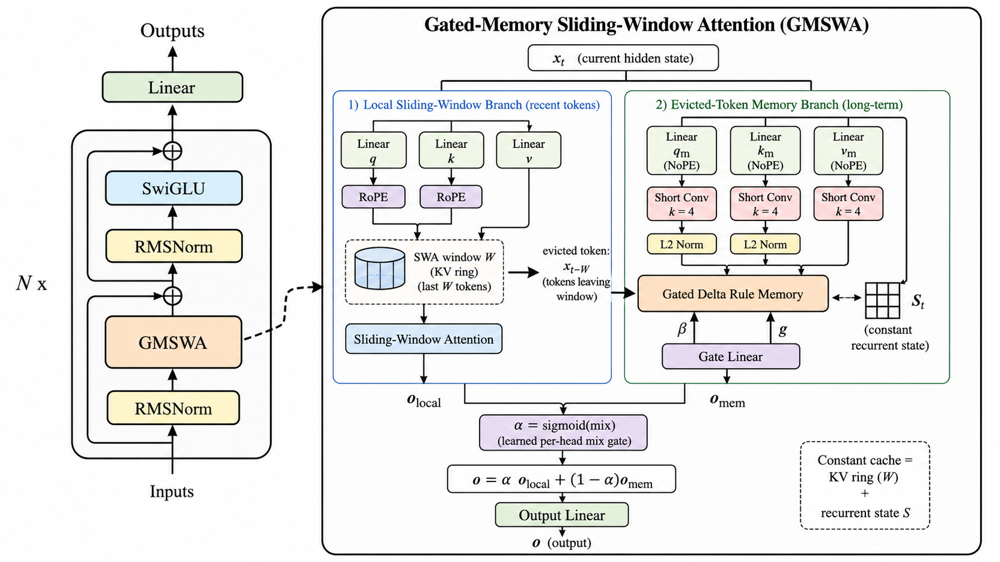

GMSWA fuses exact sliding-window attention with a recurrent matrix memory. The result is a controlled long-context study: softmax-like base quality, real semantic recall, and a fixed inference cache — plus a clear warning about where hybrid memory still fails.
GMSWA is not sold as “the best recall model.” Its value is a clean map of the tradeoff: local attention preserves language quality, memory recovers semantic recall, and exact single-needle retrieval exposes the limit.
A paper has to start with the pain point. Full attention has quality but its cache grows with context; local windows are cheap but blind beyond the window; recurrent memory is compact but can lose base language quality. GMSWA asks whether a hybrid can keep the best parts.
At 128K context, the full-attention KV cache reaches 12.9GB in this 340M setup. The memory wall, not parameter count, dominates deployment.
SWA keeps the cache bounded, but information outside the window is gone. It is strong locally, but cannot recover dropped evidence.
Pure recurrent models keep constant state and recall well, but trail softmax attention on base language quality in the controlled comparison.
The new diagram shows the whole layer: a local SWA branch, an evicted-token memory branch, and a learned gate that mixes local evidence with long-range state.

The latest draft is stronger because it does not overclaim. It separates base modeling, real recall, and synthetic recall.
GMSWA stays with the softmax family on zero-shot quality and length-stable NLL, unlike a pure recurrent baseline.
On SQuAD and FDA, GMSWA beats the recurrent baseline; on SWDE it trails. Honest read: recall parity, not dominance.
On NIAH, GMSWA tracks SWA and trails the recurrent model. This becomes the main design caution.
These are the headline numbers now worth showing on the project page.
GMSWA stays in the softmax cluster on standard zero-shot evaluation, and is the strongest length-stable model on token NLL buckets.
| Model | Zero-shot avg ↑ | NLL 1–2K ↓ | NLL 2–4K ↓ | NLL 4–8K ↓ |
|---|---|---|---|---|
| Transformer | 0.500 | 3.62 | 5.74 | 7.21 |
| SWA | 0.498 | 3.87 | 4.14 | 4.21 |
| GMSWA | 0.499 | 3.78 | 4.02 | 4.08 |
| GDN | 0.486 | 3.89 | 4.15 | 4.24 |
The deployment win is constant cache. Full attention grows linearly; GMSWA remains fixed as context length increases.
| Model | KV @8K | KV @128K | Shape |
|---|---|---|---|
| Transformer | 805MB | 12.9GB | linear |
| SWA | 50MB | 50MB | constant |
| GDN | 3.4MB | 3.4MB | constant |
| GMSWA | 16.3MB | 16.3MB | constant |
The important analysis in the latest draft: five memory-directed controls all hurt or collapse recall. The issue is not simply “the model ignored memory.”
GMSWA's strongest story is not overclaiming. It shows what a window–memory hybrid gives you, and exactly which kind of recall still requires a better memory interface.